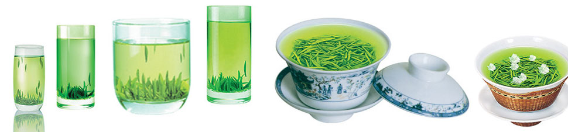

什么是狮峰龙井？
西湖龙井茶位列中国十大名茶之首，茶叶“色绿，香郁，味醇，形美”，堪称“四绝”，西湖龙井茶有狮峰，龙井，云栖，虎跑，梅家坞五个品类，以狮峰为上品，且以“明前茶”为上乘珍品，为国宴级别之贺礼。狮峰龙井以喻有“天下第一茶村”的杭州龙井村为主产地。
龙井茶因其产地不同，分为狮峰龙井、梅坞龙井、西湖龙井三种，以狮子峰所产最佳，其色泽嫩黄，香高持久，被誉为"龙井之巅"。该茶采摘有严格要求，有只采一个嫩芽的，有采一芽一叶或一芽二叶初展的。其制工亦极为讲究，在炒制工艺中有抖、带、挤、挺、扣、抓、压、磨等十大手法。操作时变化多端，令人叫绝。品尝时多用玻璃杯或盖杯水温85℃冲泡，汤色碧绿明亮，香馥如兰，滋味甘醇鲜爽，向有“色绿、香郁、味醇、形美＂四绝之誉。
“天下名茶数龙井，龙井上品在狮峰。”狮峰龙井之所以驰名，是因为乾隆皇帝下江南时，来到杭州龙井狮峰山下采了一把就因为急事回京。”乾隆皇帝赶回京城，也带回了一把已经干了的杭州狮峰山的茶叶，散发着浓郁的香气。太后想尝尝这茶叶的味道，泡上喝了一口，双眼顿时舒适多了，喝完了茶，红肿消了，胃不胀了。太后高兴地说：“杭州龙井的茶叶，真是灵丹妙药。”乾隆皇帝立即传令下去，将杭州龙井狮峰山下胡公庙前那十八棵茶树封为御茶，每年采摘新茶，专门进贡太后。
产品演示

2015013757 电子153 徐立平